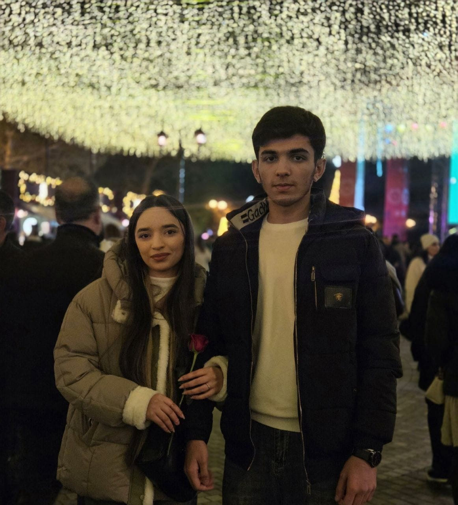
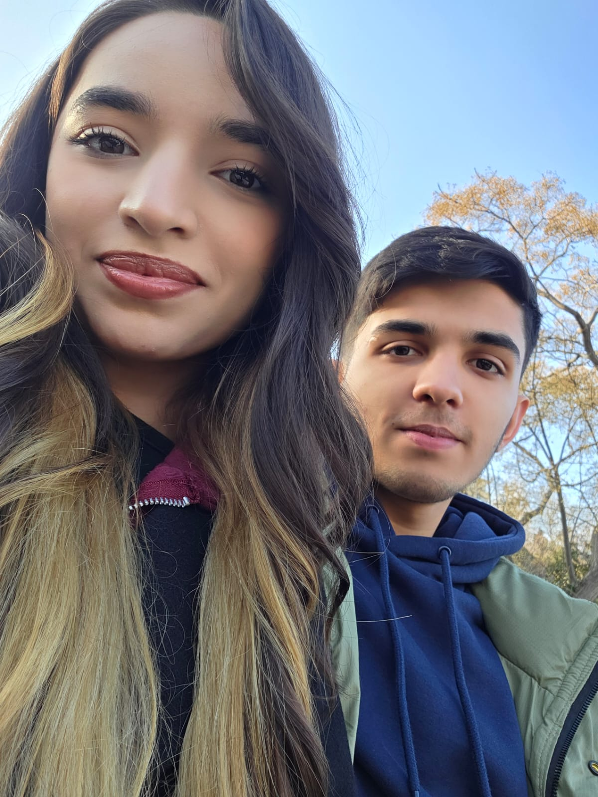
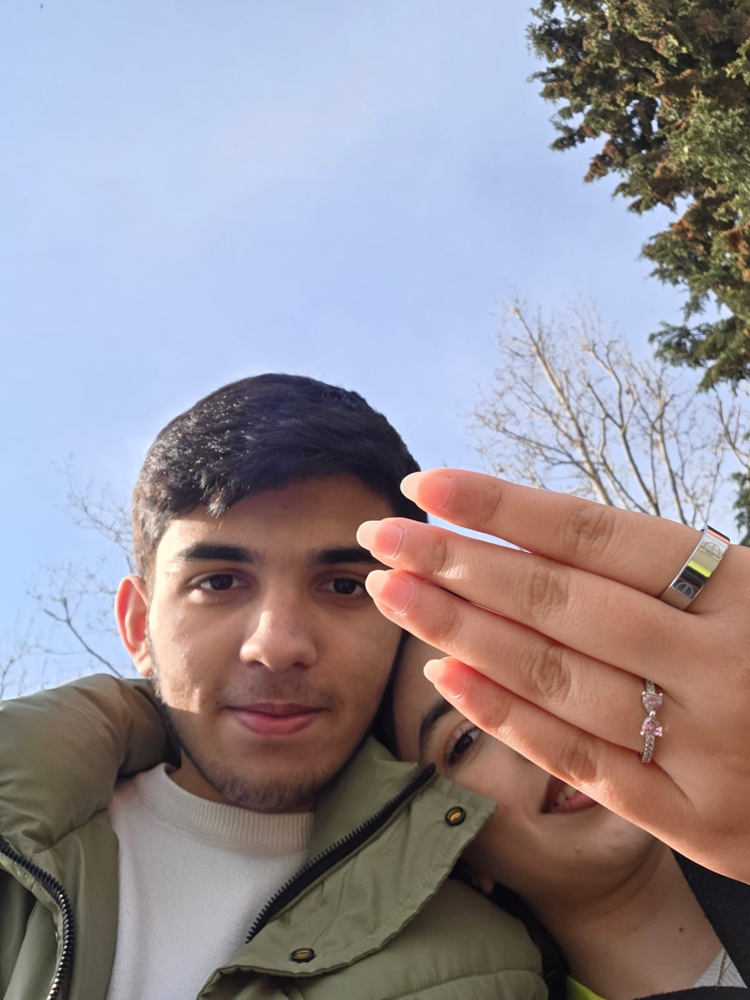
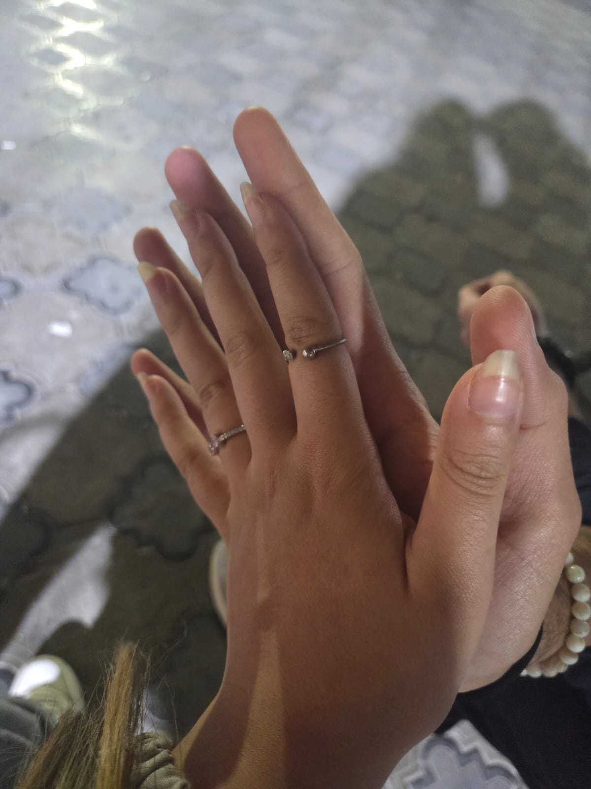
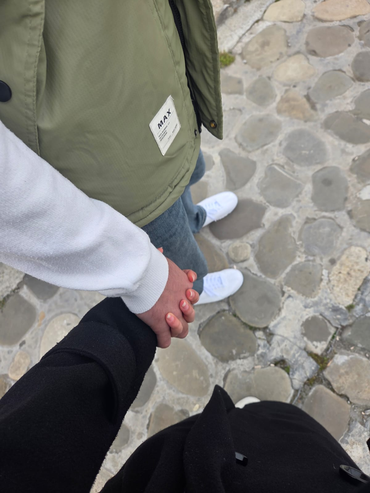
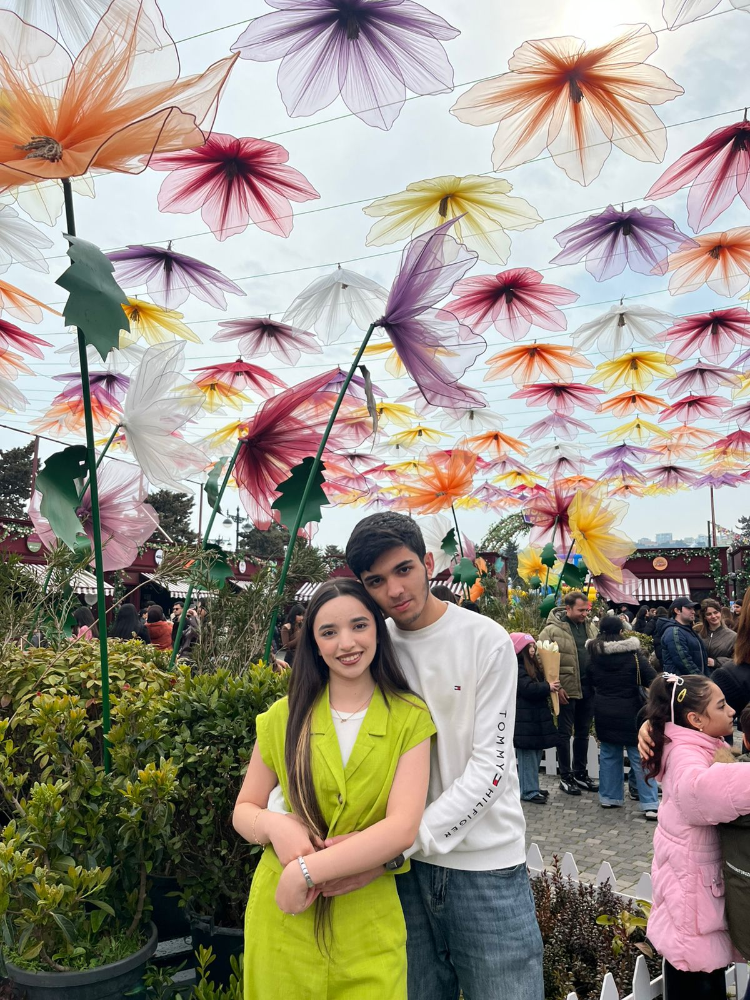

Aramızdakı bu soyuqluğu xatirələr pozsun...
(Xatirələrimizə bir bax... ↓)

O gün dünyada yalnız biz var idik sanki. Gözlərim Gözlərinə dəyəndə, heç vaxt hiss etmədiyim bir şey oldu. Mən o andan etibarən sənə bir səs vermək, səninlə bir ömür susmaq istədim. Hər şeyin başladığı o günü, heç vaxt itirməyək.

Mənim üçün bu dünyanın ən gözəl melodiyası sənin gülüşündür. Sadəcə sən gül deyə mən hər şeyi edə bilərəm. O gülüş, həyatın bütün çətinliklərini bir saniyədə unutdurur, mənim dünyamı işıqlandırır. Həmişə gülməyin üçün çalışmaq istəyirəm.

Yollar hara aparırsa aparsın, mənim üçün əsas məkan sənin yanındır. Səninlə eyni istiqamətə addımlamaq, eyni mənzərəyə baxmaq – mənə xoşbəxtlik gətirən sadəcə sənsən. Birlikdə keçdiyimiz hər küçə, hər yeni yer bir tarixdir.

Səni sadəcə seyr etmək, səsin gəlməsə belə varlığını hiss etmək – bu mənə kifayətdir. Sənin yanında olmaq, sənə dəyər verdiyini bilmək mənə hər şeyi unutdurur. Səni səssizcə dinləməyi belə sevirəm, çünki sənsən.

Həyat həmişə asan olmur, amma sənin əlini tutanda mən hər şeyin öhdəsindən gələ biləcəyimi bilirəm. Aramızda olan bütün bu çətinlikləri aşmaq üçün hazıram. Sənin varlığın mənə güc verir. Biz bir yerdə, hər şeyi aşa bilərik.

İstəmirəm bu gözəl hekayə burada bitsin. Gəl yeni bir ağ vərəq açaq, ora sadəcə sevgi yazaq. Səni itirmək istəmirəm. Hər şeyi düzəltmək, səni yenidən güldürmək üçün bir şans verərsən?
Aramızdakı bu soyuqluq bütün bu gözəl xatirələri silməsinə icazə verməyək. Mən hər şeyi düzəltmək, səni yenidən xoşbəxt etmək üçün hazıram. Bu hekayənin sonunu biz özümüz yazaq. Sənin üçün yox, BİZİM üçün...